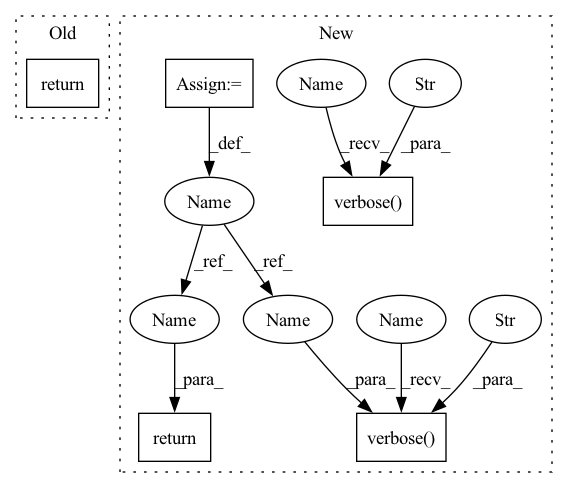

Pattern ID :11406
Before Change
service_account_email = get_service_account_email(
project_id=project_id, account_id=service_account_name)
return _has_iam_role_binding(
project_id, service_account_email, WORKER_SERVICE_ACCOUNT_ROLES, crm)
After Change
service_account_email = get_service_account_email(
project_id=project_id, account_id=service_account_name)
cli_logger.verbose("Getting IAM service account role binding: {}..." ,
service_account_name)
result = _has_iam_role_binding(
project_id, service_account_email, WORKER_SERVICE_ACCOUNT_ROLES, crm)
cli_logger.verbose("IAM service account role binding: {}: {}" ,
service_account_name, result )
return result
def _create_iam_service_accounts_binding_with_kubernetes(
config, cloud_provider, workspace_name, namespace):In pattern: SUPERPATTERN
Frequency: 4
Non-data size: 5
Instances Fragment ID: 38850592
Project Name: oap-project/cloudtik
Commit Name: 0abd9af9db82d72aff970303dfa5a33fa49d1bc7
Time: 2022-07-26
Author: haifeng.chen@intel.com
File Name: python/cloudtik/providers/_private/_kubernetes/gcp_gke/config.py
M Class Name: AnonimousClass
N Class Name: AnonimousClass
M Method Name: _has_iam_service_account_role_binding(4)
N Method Name: _has_iam_service_account_role_binding(4)
M Parent Class:
N Parent Class:
M File Name: python/cloudtik/providers/_private/_kubernetes/gcp_gke/config.py
N File Name: python/cloudtik/providers/_private/_kubernetes/gcp_gke/config.py
M Start Line: 291
M End Line: 297
N Start Line: 307
N End Line: 318
Before Change
member_id = _get_kubernetes_service_account_iam_member_id(
project_id, namespace, service_account_name
)
return _has_service_account_iam_role_binding(
project_id, iam_service_account_email,
GCP_KUBERNETES_SERVICE_ACCOUNT_WORKLOAD_IDENTITY_ROLES,
member_id=member_id,After Change
project_id, namespace, service_account_name
)
cli_logger.verbose("Getting IAM service account binding with Kubernetes: {} -> {}..." ,
iam_service_account_name, service_account_name)
result = _has_service_account_iam_role_binding(
project_id, iam_service_account_email,
GCP_KUBERNETES_SERVICE_ACCOUNT_WORKLOAD_IDENTITY_ROLES,
member_id=member_id,
iam=iam)
cli_logger.verbose("Getting IAM service account binding with Kubernetes: {} -> {}: {}" ,
iam_service_account_name, service_account_name, result)
return result
def _associate_kubernetes_service_accounts_with_iam( Fragment ID: 38850589
Project Name: oap-project/cloudtik
Commit Name: 0abd9af9db82d72aff970303dfa5a33fa49d1bc7
Time: 2022-07-26
Author: haifeng.chen@intel.com
File Name: python/cloudtik/providers/_private/_kubernetes/gcp_gke/config.py
M Class Name: AnonimousClass
N Class Name: AnonimousClass
M Method Name: _has_iam_service_account_binding_with_kubernetes(6)
N Method Name: _has_iam_service_account_binding_with_kubernetes(6)
M Parent Class:
N Parent Class:
M File Name: python/cloudtik/providers/_private/_kubernetes/gcp_gke/config.py
N File Name: python/cloudtik/providers/_private/_kubernetes/gcp_gke/config.py
M Start Line: 408
M End Line: 422
N Start Line: 436
N End Line: 456
Before Change
workspace_name = config["workspace_name"]
service_account_name = _get_service_account_name(provider_config, account_type)
iam_service_account_name = _get_iam_service_account_name(workspace_name, account_type)
return _is_service_account_associated_with_iam(
cloud_provider,
namespace,
service_account_name,After Change
service_account_name = _get_service_account_name(provider_config, account_type)
iam_service_account_name = _get_iam_service_account_name(workspace_name, account_type)
cli_logger.verbose("Getting Kubernetes service account associated: {} -> {}..." ,
service_account_name, iam_service_account_name)
result = _is_service_account_associated_with_iam(
cloud_provider,
namespace,
service_account_name,
iam_service_account_name
)
cli_logger.verbose("Kubernetes service account associated: {} -> {}: {}." ,
service_account_name, iam_service_account_name, result)
return result
def _is_service_account_associated_with_iam( Fragment ID: 38850590
Project Name: oap-project/cloudtik
Commit Name: 0abd9af9db82d72aff970303dfa5a33fa49d1bc7
Time: 2022-07-26
Author: haifeng.chen@intel.com
File Name: python/cloudtik/providers/_private/_kubernetes/gcp_gke/config.py
M Class Name: AnonimousClass
N Class Name: AnonimousClass
M Method Name: _is_service_account_associated(4)
N Method Name: _is_service_account_associated(4)
M Parent Class:
N Parent Class:
M File Name: python/cloudtik/providers/_private/_kubernetes/gcp_gke/config.py
N File Name: python/cloudtik/providers/_private/_kubernetes/gcp_gke/config.py
M Start Line: 565
M End Line: 572
N Start Line: 599
N End Line: 613
Before Change
cli_logger.verbose("Getting existence for {} cloud provider for Kubernetes.", cloud_provider_type)
if cloud_provider_type == "aws":
from cloudtik.providers._private._kubernetes.aws_eks.config import check_existence_for_aws
return check_existence_for_aws(config, namespace, cloud_provider)
else:
cli_logger.verbose("No integration for {} cloud provider.", cloud_provider_type)
return NoneAfter Change
provider_config = config["provider"]
cloud_provider = _get_cloud_provider_config(provider_config)
if cloud_provider is None:
cli_logger.verbose("No cloud provider configured for Kubernetes." )
return None
cloud_provider_type = cloud_provider["type"]
cli_logger.verbose("Getting existence for {} cloud provider for Kubernetes.", cloud_provider_type)
if cloud_provider_type == "aws":
from cloudtik.providers._private._kubernetes.aws_eks.config import check_existence_for_aws
existence = check_existence_for_aws(config, namespace, cloud_provider)
cli_logger.verbose("The existence status for {} cloud provider: {}." , cloud_provider_type, existence)
return existence
else:
cli_logger.verbose("No integration for {} cloud provider.", cloud_provider_type)
return None Fragment ID: 38850591
Project Name: oap-project/cloudtik
Commit Name: e2327205033464f357f96d7a749b9ee6ab827831
Time: 2022-07-23
Author: haifeng.chen@intel.com
File Name: python/cloudtik/providers/_private/_kubernetes/config.py
M Class Name: AnonimousClass
N Class Name: AnonimousClass
M Method Name: _check_existence_for_cloud_provider(2)
N Method Name: _check_existence_for_cloud_provider(2)
M Parent Class:
N Parent Class:
M File Name: python/cloudtik/providers/_private/_kubernetes/config.py
N File Name: python/cloudtik/providers/_private/_kubernetes/config.py
M Start Line: 1409
M End Line: 1417
N Start Line: 1430
N End Line: 1441